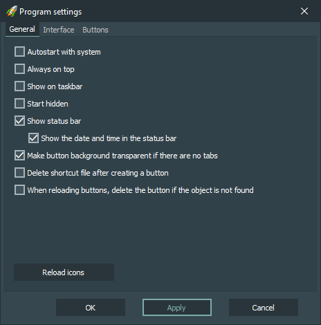

General options:
-
Autostart with system
Autostart application on system startup.
-
Always on top
The main window of the application will always be located on top of all other windows.
-
Start hidden
Run application with hidden main window.
-
Show status bar
Show status bar in the main application window.
-
Show the date and time in the status bar
Show the date and time in the status bar in the main application window.
-
Make button background transparent if there are no tabs
The background of the buttons in the main window will be transparent if there are no tabs in the main window.
-
Delete shortcut file after creating a button
Delete the original shortcut file when creating a new button, if this option is enabled.
-
When reloading buttons, delete the button if the object is not found
When all buttons are reloaded, buttons are deleted for which the object bound to the button is not found.
-
Button «Reload icons»
Pressing this button reloads all buttons.